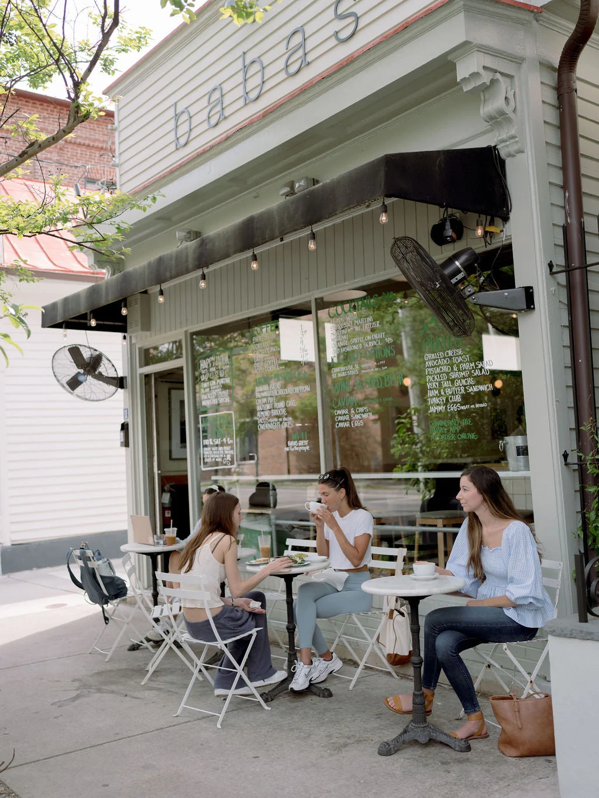

Why Charleston?
Charleston is seeing a surge in coffee shops due to rapid population growth, lower startup barriers compared to full-scale restaurants, and a strong local culture that values neighborhood gathering spaces.
Key Drivers of Coffee Shop Growth
• Rapid Population and Housing Growth: Charleston is one of South Carolina's fastest-growing metro areas. As new residential "rooftops" go up in submarkets like Mount Pleasant, Nexton, and Johns Island, retail and daily services follow close behind. • Lower Startup and Operating Costs: Compared to traditional restaurants, opening a coffee shop requires fewer heavy capital expenditures. Owners often bypass the need for expensive commercial kitchen hoods, grease traps, or large staff footprints, making the business model more viable against high commercial rent. • Deep "Support Local" Culture: Charleston residents heavily prioritize local businesses over national chains. Independent cafés act as community hubs, offering personal connections, remote-work environments, and locally sourced pastries or farm-to-table ingredients. • Built-in Tourism Traffic: Millions of annual visitors blend with year-round locals to sustain high foot traffic through historic downtown streets and surrounding neighborhoods. • Low-Risk Daily Rituals: Unlike full-service dining where customers constantly seek out new and experimental menus, coffee runs rely on daily habits, consistency, and neighborhood loyalty.Cafés
My favorite cafés in Charleston

Prophet Coffee
Come get a sip of some of North Charleston’s best coffee. This little coffee shop is bringing a little bit of the golden coast to our shores with their clean, boho aesthetic and coffee creations, such as their ever popular coconut cold brew. As coffee roasters they are dedicated to creating the perfect cup of coffee to start your day off right.
Address
4427 Spruill Ave, North Charleston, SC 29405
What I like about it
This is a plant-based café, making it safe for those who avoid cow's milk. They also make their syrups and bakery items fresh in-house, allowing for impeccable flavor and quality.

The Harbinger
The Harbinger Cafe & Bakery is located on King Street in Downtown Charleston, SC. Established in 2017, this cafe/bakery has been serving the community with breakfast, lunch, pastries and coffees in a cozy, welcoming environment with dedication and enthusiasm all these years– with many more to come!
Address
1107 King St, Charleston, SC 29403
What I like about it
The cozy vibes of this shop make it a great place to study or read. Outdoors, the patio is a great place to gather with friends.

Second State
A small, locally owned coffee roastery and multi-location cafe. They began operation in 2012 on Beaufain St in downtown Charleston, SC.
Address
70.5 Beaufain St Charleston, SC 29401, 2156 Noisette Blvd North Charleston, SC 29405, 1630 Ashley Hall Rd Charleston, SC 29407, 1410 Shucker Circle Ste 1107 Mount Pleasant, SC 29464 and 766 S Shelmore Blvd. Mount Pleasant, SC 29464
What I like about it
This is an award winning café that also supplies beans to many of the coffee shops in Charleston. They have made a name for themselves in quality. Plus, the West Ashley Location has amazing waffles.